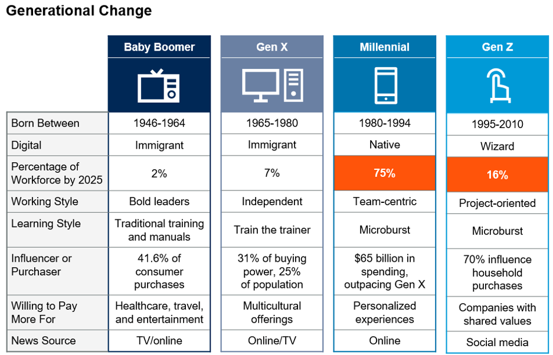
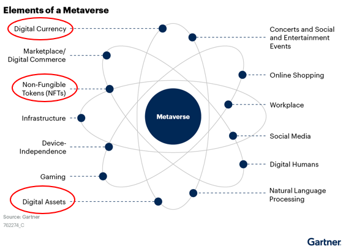
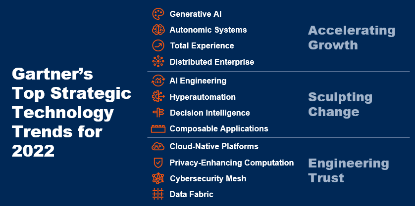
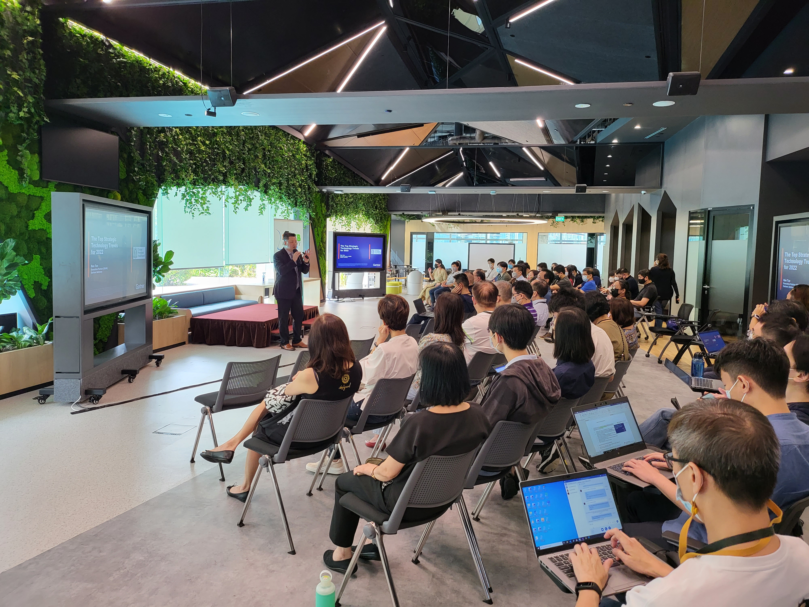
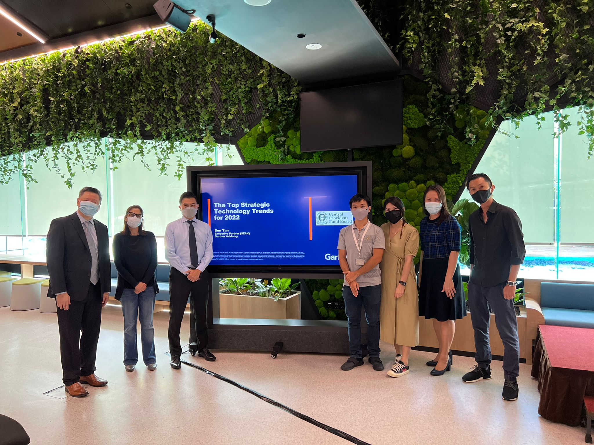

MetaVerse
Upcoming Technologies
MetaVerse
Before we drill into MetaVerse or any technologies, we may want to know the generational change in tech adoption as shown in the diagram

With this in mind, we can then see that the majority of the workforce are the milenial and Gen Z. These groups are also like natives and wizards to digital platform. You do not need to teach them how to use them. They are also more willing to pay for personalised experience and a whole suit of digital service. With the AR/VR getting slimmer and lighter, we can see that MetaVerse will make it way to the upcoming tech trend

What is MetaVerse?
The metaverse is an immersive, interactive environment generated by a computer. It can even be used for meeting, discussion and creating a prototype. With rental space going up, many US companies like Zara and Disney are already using it to replace physical space
With some sort of identity verification, metaverse visitors use an avatar to explore their new virtual environment. Technologies that support this type of immersive computing include the following:

Top Strategic Tech trends
If I may summarise the key tech trends that I have facilitated together with Gartner for my peers to widen their views of developing IT application, we will always need to looking at how technology can accelerate growth, scrulpting and engineering trust.

Once we look at things holistically, we can then explore the technologies and help any organisation to hop on the tech trend when it mutuals/pick up. Otherwise we will be left behind and miss out the opportunities.

